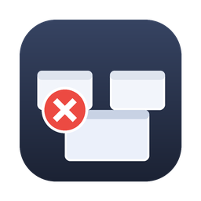

MC Close
Control windows right from Mission Control on your Mac.
Install
Paste this into Terminal. No password needed.
curl -fsSL https://anujbajaj4.github.io/fixing_macos/install.sh | bash
Then switch MC Close on when it asks for Accessibility. Prefer a download? MCClose.dmg. macOS will say it "could not verify" the app because it isn't notarized: click Done, then System Settings ▸ Privacy & Security ▸ Open Anyway. Needs macOS 13 or later.
Point at a window in Mission Control, then
| ✕Close the window | ⌘W |
| −Minimize it | ⌘M |
| ⤢Full screen, in its own space | ⌃⌘F |
| +Zoom: fill the screen in place, like Option-clicking the green button | ⌥⌘F |
| Hide the app | ⌘H |
| Quit the app | ⌘Q |
Shortcuts only act while Mission Control is open and the pointer is on a window. Everywhere else your keys work as usual.
Privacy
MC Close needs Accessibility permission to see Mission Control and use windows' own buttons. It contacts nothing except GitHub, once a month, to check for a new version, and sends nothing about you. Free and open source: source code.